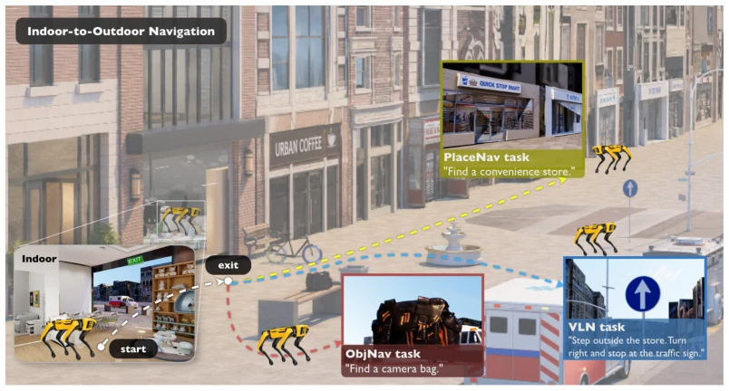
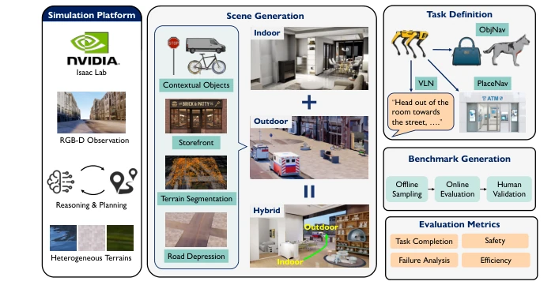
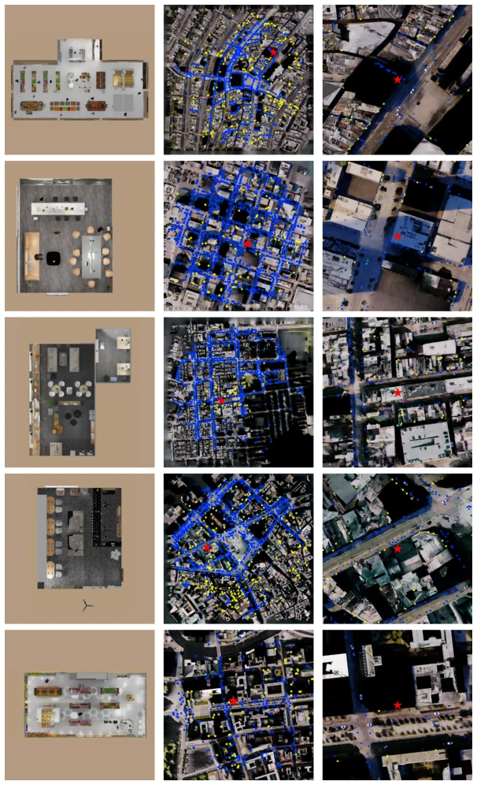
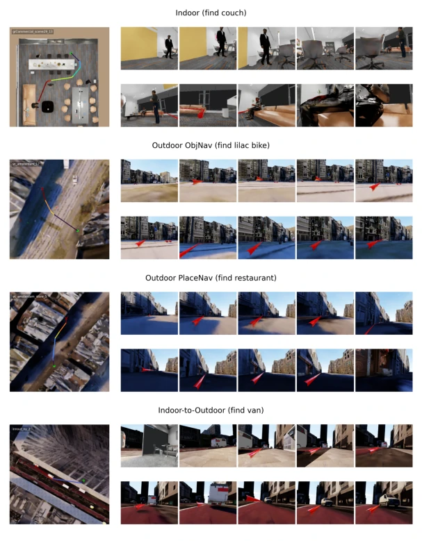

NavVerse attempts to add an 'anti-fall' patch to embodied navigation using a physics engine; this idea is correct, but the results are somewhat stark. It packages indoor, outdoor, and mixed scenes, claiming 10,000 episodes, and also developed PlaceNav to find restaurants. However, once experiments run, SOTA models directly 'stagnate' in mixed scenes; VLA models although run fast, safety is concerning, with a non-negligible wall collision rate. This is like asking a toddler who just learned to walk to run a marathon, while requiring no falls. However, it indeed puts 'collision rate' and 'navigable surface ratio' such hard-core metrics on the table, much more substantial than those benchmarks that only calculate success rates. It is just that scenes are still mainly single-layer; if in the future multi-story buildings can be handled, this Benchmark will truly be 'grounded'. Additionally, 'exit finding' in mixed scenes remains a major hurdle, with nearly half of failures getting stuck here, indicating existing policy learning has not yet learned how to 'exit'.
Embodied AI must solve the 'indoor to outdoor' continuous navigation problem to move out of the laboratory. Existing work mostly treats them separately: indoor benchmarks such as Habitat [24], MP3D [14] focus on structured environments, while outdoor benchmarks such as KITTI [17], nuScenes [18] rely on offline data or panoramic views. This fragmentation leads to the 'transition zone' (exit finding, boundary traversal) being severely underestimated. As stated in [1], although indoor visual navigation has progressed significantly, general-purpose robots require seamless integration. NavVerse points out that existing platforms either abstract away robot execution (discrete actions) or ignore terrain topology (curbs, steps), causing policies to fail under real physical constraints (e.g., collisions, falls). Therefore, a unified physics simulation environment is needed to evaluate cross-scene adaptability under kinodynamic constraints.

Figure 1: NAVVERSE connects indoor, outdoor, and hybrid indoor-to-outdoor scenes for ObjNav, VLN, and PlaceNav tasks under continuous physics-enabled robot execution, and evaluates task success, efficiency, and safety.
NavVerse is built based on Isaac Sim, with the process divided into scene generation, task definition, and evaluation. Regarding scenes, it integrates 100 indoor scenes from GRScenes [43], 50 outdoor scenes from Virtual Community [42], and generates 50 mixed scenes through 'door-to-facade' assembly, ensuring physical consistency. Regarding tasks, besides standard ObjNav and VLN, it innovatively proposes PlaceNav, requiring robots to locate functional places (e.g., restaurants), filling the gap from room-level to city-level. The evaluation system not only looks at success rate (SR) and path efficiency (SPL), but also forcibly introduces safety metrics: collision rate (CR), average distance to obstacles (ADO), and navigable surface ratio (NSR). At the execution level, it supports continuous physics simulation, uses the Spot robot interface, executes waypoints or discrete actions via PID controller and motion strategy stack, ensuring action executability rather than idealized assumptions.

Figure 2: Overview of the NAVVERSE benchmark construction pipeline. Isaac Sim provides the execution engine, while NAVVERSE contributes connected indoor, outdoor, and indoor-to-outdoor scene construction, task generation, oracle validation, and diagnostic evaluation.

Figure 3: Generated BEV maps for representative indoor, outdoor, and indoor-to-outdoor scenes. Blue points denote object instances and yellow points denote storefront goals. The red star marks the indoor-area anchor used for indoor-to-outdoor scenes and is shown as a city-scale reference in outdoor scenes.
Experiments evaluated four baselines: modular SGImagineNav [11], RL PoliFormer [8], VLA UniNaVid [2], and VLA-RL LongNav-R1 [45]. Results show UniNaVid leads in zero-shot task completion rate, but all models show significant performance drop in mixed scenes. PlaceNav task success rate plummeted 14% from pure outdoor to mixed scenes, exposing topology adaptation bottlenecks. Safety analysis indicates VLA models have high exploration efficiency but high collision risk, while modular methods are safer but less efficient. Transition analysis finds nearly half of failures occur at the 'not reached outdoor' stage, and coverage efficiency generally drops after exiting indoors, indicating robots struggle to adapt to scale changes. Additionally, long-distance navigation (Hard split) shows obvious error accumulation, and physical dynamics (e.g., friction coefficient) have a huge impact on execution success rate.

Figure 7: GT Trajectory qualitative examples. Each row shows one episode: the left panel is a BEV overview with the oracle reference path, and the right panels are egocentric RGB frames. The start is marked by a yellow dot and the goal by a red cross in the BEV, and the red overlay in RGB frames indicates the commanded oracle reference path.